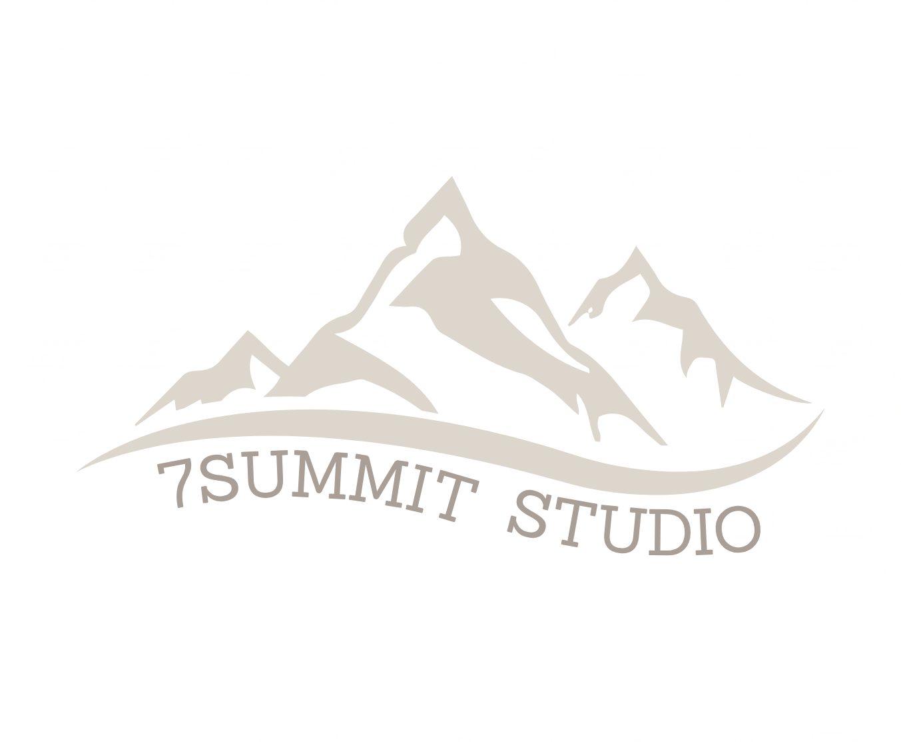
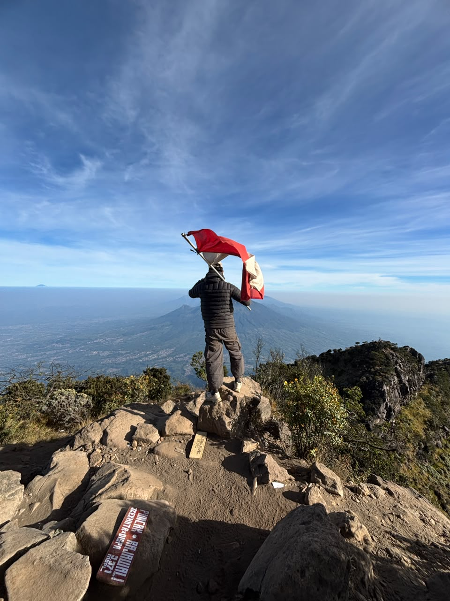
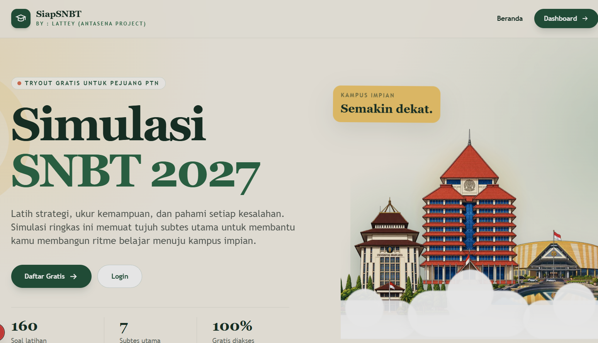

↗7SummitStudio
Founder & solo developer studio Roblox yang berfokus pada game eksplorasi dan edukatif. Lebih dari tujuh experience dan satu juta kunjungan.
Sistem Informasi · Game · Software
Saya Naufal Putra Aryaguna, mahasiswa Sistem Informasi Gunadarma dan developer yang senang merangkai ide menjadi game, website, dan pengalaman interaktif.

Currently
building strange
little worlds.
01 / 04
01 — Tentang
About Me
Saya mahasiswa Sistem Informasi di Universitas Gunadarma dan aktif di bidang pengembangan game. Dari mekanik game sampai alur produk, saya suka mengulik bagaimana sesuatu bekerja lalu membuatnya lebih bermakna.
Setiap proyek saya mulai dari rasa penasaran kecil: sebuah cerita, gesture, atau masalah yang ingin dibuat lebih sederhana.
02 — Toolbox
Yang saya pakai
03 — Karya terpilih
Eksperimen, kolaborasi, dan dunia kecil yang masih terus tumbuh.

↗Founder & solo developer studio Roblox yang berfokus pada game eksplorasi dan edukatif. Lebih dari tujuh experience dan satu juta kunjungan.

Studio Roblox untuk game horror berbasis mitologi Indonesia, dikembangkan bersama teman-teman kampus.

Website persiapan ujian SNBT dengan Next.js, React, Tailwind, TypeScript, dan Supabase.
“
04 / Upcoming
Reporter, sebuah liputan, dan sesuatu yang seharusnya tidak ditemukan.
Roblox horror game · playable now
05 / Experiments
Menggunakan Python, MediaPipe, dan Pygame untuk memutar lagu serta memunculkan lirik otomatis berdasarkan gesture tangan.
Diskusikan proyek ↗